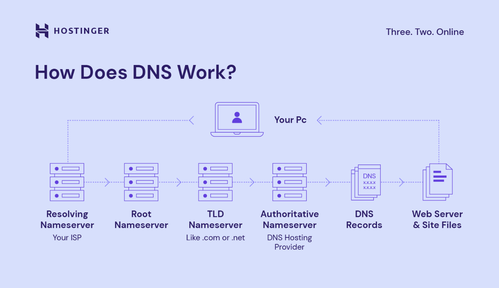

5. Definisi dan Cara Kerja DNS (Domain Name System)
DNS adalah Sistem Nama Domain—buku telepon utama Internet. DNS bertugas menerjemahkan nama domain (yang mudah diingat manusia, seperti nytimes.com) menjadi Alamat IP (yang dipahami peramban), sehingga memungkinkan browser memuat sumber daya Internet. Tanpa DNS, kita harus menghafal Alamat IP yang rumit untuk setiap situs.
Cara Kerja Server DNS (Resolusi Nama Domain):
- Permintaan DNS: Pengguna mengetik domain, dan perangkat mengirimkan permintaan ke DNS Resolver.
- Pencarian Hierarkis: Resolver kemudian mencari IP melalui hierarki: Server Root → Server TLD → Server DNS Otoritatif.
- Mengirim Balasan: Server Otoritatif mengirimkan Alamat IP yang benar kembali ke resolver.
- Akses Server: Resolver mengirimkan IP tersebut ke perangkat pengguna, yang menggunakannya untuk menghubungi server tujuan (Hosting).

Cara Kerja DNS